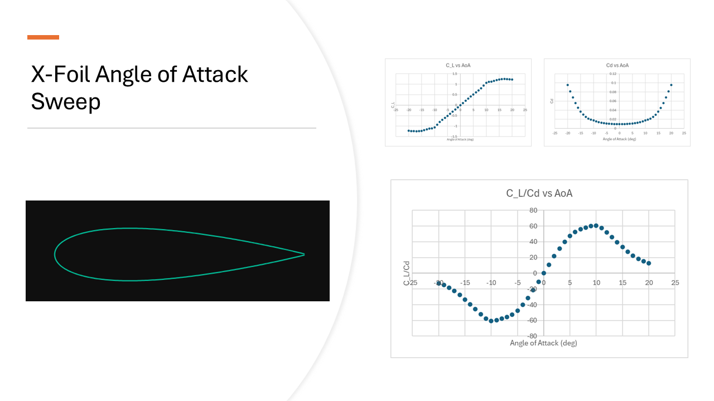
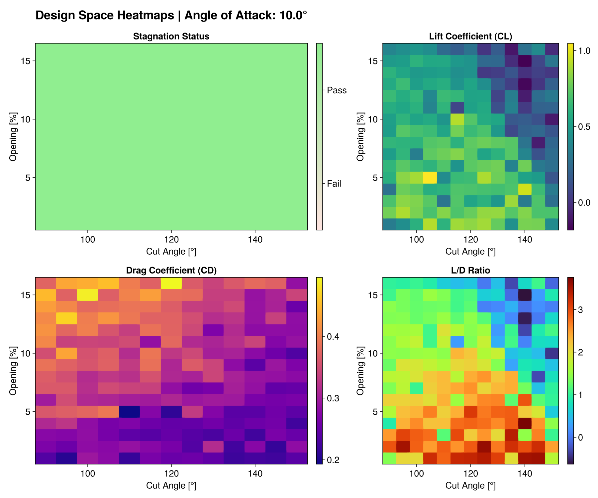
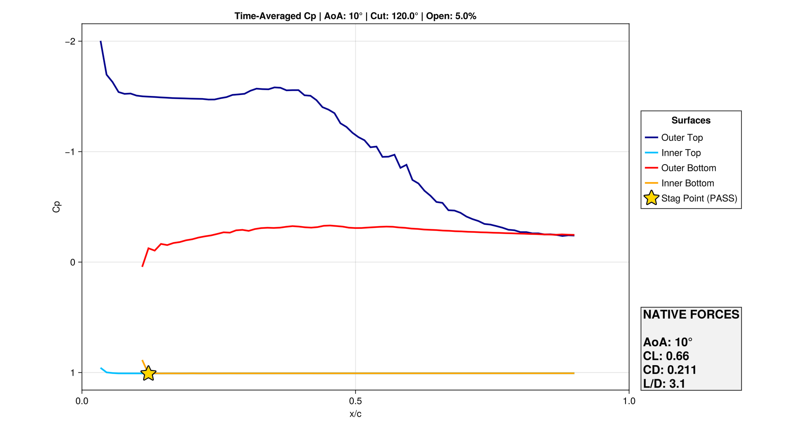

Evan Miller, Temple University
🪂 Paraglider Simulation Viewer
Interactive visualization of aerodynamic simulations
Flight Profile of A Ram Air Paraglider Wing
A parachute is not a simple sheet of fabric. Parachutes and paragliders are inflatable airfoils that hold their shape do to the ram air pressure on openings in the front.
Project Overview
This project simulates a 2D cross section of a ram air paraglider wing. Using this data, the design criterea as well as performance of the wing can be better understood.
Methods
An NACA0022 Profile was used for all calculations. An XFoil simulation of this airfoil was performed to determine its base characteristics. Waterlily was used for all simulations. A chord length of 128 and a Re of 5*10^5 were kept standardized in all tests. The choice of the NACA0022 airfoil and the Reynolds number were made with reference to the attached PDF. You can open it here: Experimental Study of Paragliders Aerodynamics. All simulations were recorded for 300 frames over a time frame of 10 seconds unless otherwise stated.
Experimental Variables
-Angle of Attack (AoA)
-Opening Size in terms of %chord length
-Opening Angle relative to the X-axis
XFOIL Analysis
Below is the XFOIL analysis providing baseline airfoil performance characteristics.

From this simulation, it is evident that the pont of maximum lift per drag (L/D) occurs roughly at a 10 degree AoA
Reference Heatmap at 10° AoA
Since the point of maximum lift occurs at a 10 degree angle of attack, this was used to calculate a 13x12 graph. Each simulation was run for 30 simulation seconds for 900 frames.

These graphs demonstrate multiple different relationships. The first box displays that at every simulation, the stagnation point fell inside the airfoil. As the opening increases, so does drag. More verticle cuts also increase the drag. The lift defreases as the opening increases in size, but appears to increase as the angle of the cut increases. Looking at the L/D chart, these relationships appear to result in a peak at approximately 5% opening and 120 degrees.
Simulation Example: 120° Sweep, 5% Opening, 10° AoA
Here is a detailed look at the simulation flow and resulting pressure coefficient (Cp) distribution for a configuration with a 120-degree sweep, 5% opening, and 10-degree angle of attack. Not that this was done for 300 frames, not 900, so values may differ slightly in the chart.

Conclusion
While no manufacturer data was found on industry opening size or slant, this document displays how this could be determined. The graphs show the relationships between the experimental variables considered. On the additional tabs on the website, further maps are shown that display what angle of attack or opening results in a collapsing wing. Balancing the data on the website for the inflation profile and performance profile can allow a designer to select the optimal wing.
Video Simulation
Pressure Coefficient (Cp)
Description
Simulations were run for 882 different configurations. These simulations can be viewed here. The videos display velocity, pressure, and vorticity. The average pressure profile as well as performance data are listed for the wing in the image beside the video.
Interactive Heatmap Analysis
Inflation Profile Analysis
In the first graph, as squares turn gray, the stagnation point moves outside of the ram air opening. Since pressure is then greater on the outside than inside, a collapse will occur. This leaves the pilot without a plane and should be avoided. The data includes negative angles of attack to account for turbulence and sudden downdrafts. Data here appears more noisy than the graph on the perfomance page since they are over 300 frames, not 900. The three hundred frames are not enough to determine an adequate average accross every simulation. .
Inflation Profile Findings and Results
The data indicates that a wider opening is more resilient to large variences in angle of attack before collapse. They also demonstrate that a more verticle cut will handle lower angle of attacks while a lower opening will handle higher angles of attack better before collapse.